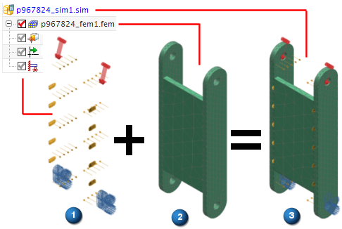

在高级仿真中，CAE 模型是一组包含执行分析所需全部数据的文件。最简单的 CAE 模型由两个文件组成：
仿真文件，该文件包含边界条件和特定于求解器的数据
FEM 文件(有限元模型文件)，该文件包含网格数据以及物理属性和材料属性。FEM 文件与 NX 主模型概念保持一致，是仿真文件的组件
CAE 模型与 CAD 部件 (.prt) 文件中包含的模型几何体相关联。可以将模型与 NX 部件文件相关联，也可以创建理想化部件文件，以管理与实时 CAD 数据无关的特定于分析的几何体修改。
|

|
由于分析数据在多个文件间分割，您可以更加轻松和高效地管理系统资源、支持基于团队的分析和并行工程，以及重用 CAD 几何体和有限元数据进行多项分析。
装配 FEM 文件属于可选文件类型，可用于创建由多个有限元模型文件组成的 CAE 模型。装配有限元模型文件可作为仿真文件的主模型。该文件包含组件有限元模型文件的事例和位置数据，以及连接单元和属性覆盖。